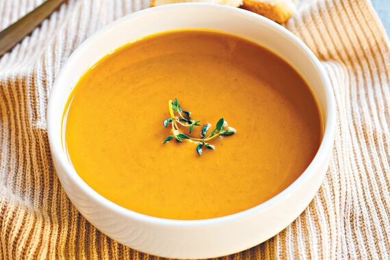

Pumpkin Soup Recipe

Pumpkin soup is a usually 'bound' (thick) soup made from a purée of pumpkin.
It is made by combining the meat of a blended pumpkin with broth or stock.
It can be served hot or cold, and is a popular Thanksgiving dish in the United States.
Various versions of the dish are known in many European countries, the United States and other areas of North America, in Asia and in Australia
Ingredients
- 6 cups chicken stock
- 4 cups pumpkin puree
- 1 cup chopped onion
- 1 clove garlic, minced
- 1 ½ teaspoons salt
- ½ teaspoon chopped fresh thyme
- 5 whole black peppercorns
- ½ cup heavy whipping cream
- 1 teaspoon chopped fresh parsley
Steps
- Place chicken stock, pumpkin puree, onion, garlic, salt, thyme, and peppercorns in a large pot; bring to a boil.
Reduce heat to low and simmer, uncovered, 30 minutes.
- Transfer soup to a blender or food processor in batches; blend until smooth.
- Return soup to the pan and bring to a boil; reduce heat to low and simmer, uncovered, for 30 minutes.
- Stir in heavy cream. Ladle soup into bowls and garnish with fresh parsley.